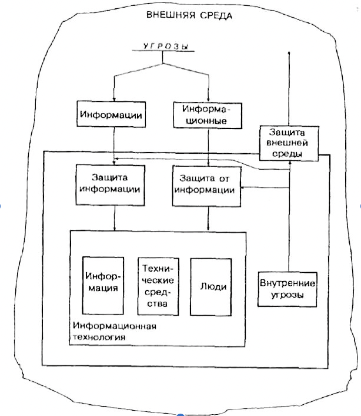
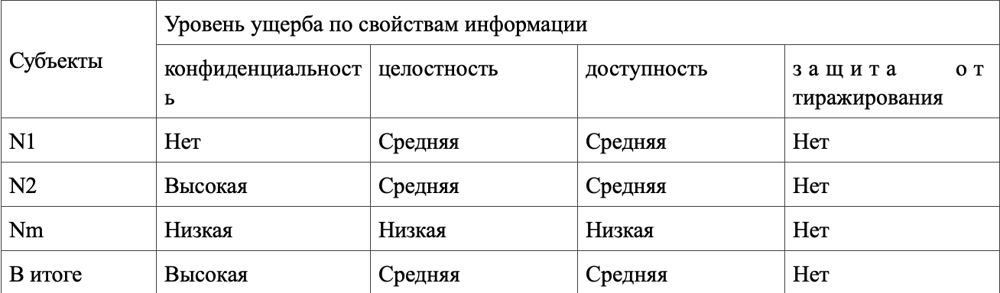
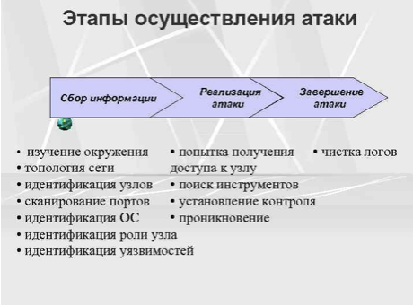

Введение
Информация имеет первостепенное значение. Современное общество называют информационным.
В 1972 году американский специалист в области связи и вычислительной техники Роберт Фано говорил: «Стремление сохранить тайну предприятий и отдельных лиц – не единственный повод для поиска надежных средств обеспечения неприкосновенности информации, хранимой в вычислительных системах, а также для поиска средств контроля над ее применением. Такие средства требуются также для выполнения договорных обязательств, заключаемых между создателями программного обеспечения и банков данных, с одной стороны, и потребителями этой продукции, с другой. Следует иметь в виду и то, что бесконтрольный сбор, хранение и распределение информации неизбежно сопровождается «загрязнением» информационной среды – явлением, которое уже начало приводить если не к серьезным, то, во всяком случае, к тревожным последствиям. Наконец, соображения общественной безопасности диктуют необходимость надежного контроля над информацией, способной оказаться источником угрожающего положения, скажем вследствие распространения среди населения панических настроений либо вследствие потворствования незаконным действиям»
Проблема безопасности информационных технологий (ИТ) возникла на пересечении двух активно развивающихся направлений – безопасности технологий и информатизации.
Обеспечение собственной безопасности – задача первостепенной важности для любой системы независимо от ее сложности и назначения, будь то биологический организм или система обработки информации. Однако когда средства нападения имеют форму информационных воздействий, необходимо разрабатывать и применять совершенно новые технологии, методы зашиты.
Научные и технические предпосылки кризисной ситуации.
Современные компьютеры приобрели гигантскую вычислительную мощь, но одновременно с этим стали и проще в эксплуатации.
Все большее количество новых (и неквалифицированных) людей получает доступ к компьютерам, что приводит к снижению средней квалификации пользователей. Большинство пользователей имеют личные компьютеры и осуществляют их администрирование самостоятельно. Они не в состоянии постоянно поддерживать безопасность своих систем на должном уровне, т.к. это требует соответствующих знаний, времени и средств. Распространение сетевых технологий объединило отдельные машины в локальные сети, совместные использующие общие ресурсы, а применение технологий клиент-сервер и кластеризации преобразовало такие сети в распределенные вычислительные среды.
Безопасность сети определяется защищенностью всех входящих в нее компьютеров и сетевого оборудования и достаточно нарушить работу только одного компьютера, чтобы скомпрометировать всю сеть.
Если компьютер, который является объектом атаки, подключен к глобальной вычислительной сети (Internet), то независимо от характера обрабатываемой в нем информации то не имеет значения, где он находится – в соседней комнате или на другом континенте.
Бурное развитие программного обеспечения.
В настоящее время большинство операционных систем не отвечает требованиям безопасности, хотя в последнее время и осуществляют определенные усилия в этом направлении. Существует огромное количество различных недокументированных возможностей, обеспечивающих реализацию намеренных злоумышленных действий.
Развитие гибких и мобильных технологий привело к тому, что практически исчезает грань между обрабатываемыми данными и исполняемыми программами за счет появления и широкого распространения виртуальных машин и интерпретаторов. Теперь любое развитое приложение не просто обрабатывает данные, а интерпретирует интегрированные в них инструкции специальных языков программирования, т.е. по сути дела является отдельной машиной с привычной фон-неймановской архитектурой, для которых можно создавать средства нападения. Это увеличивает возможности злоумышленников и затрудняет задачу зашиты таких систем, т.к. наличие «вложенных» систем требует и реализации защиты для каждого уровня.
Несоответствие бурного развития средств обработки информации и медленного процесса разработки теории информационной безопасности привело к разрыву между теоретическими моделями, оперирующими абстрактными понятиями и реальными категориями современных информационных технологий. Кроме того, многие средства защиты (например, средства борьбы с компьютерными вирусами) и системы защиты корпоративных систем на данный момент вообще не имеют системной научной базы. Такое положение является следствием отсутствия общей теории защиты информации, комплексных моделей безопасности обработки информации, отсутствие средств, позволяющих эффективно промоделировать адекватность тех или иных решений в области безопасности. Сегодня нет даже общепринятой терминологии, адекватно воспринимаемой всеми специалистами в области безопасности.
Необходимость создания глобального информационного пространства и обеспечение безопасности протекающих в нем процессов потребовала разработки международных стандартов, следование которым может обеспечить необходимый уровень гарантий обеспечения ИБ. Причем в современных условиях важным является не только стандартизация требований безопасности, но и обоснование их применения, а также методов подтверждения адекватности реализованных средств защиты и корректности самой реализации.
Перед разработчиками современных ИС стоят следующие задачи:
Обеспечение безопасности новых типов информационных ресурсов. Это означает, что системы защиты должны обеспечивать безопасность не отдельных документов, файлов или сообщений, а решать задачи ИБ на уровне информационных ресурсов (Например, гипертекст, мультимедиа).
Гипертекст – информационный массив, на котором заданы и автоматически поддерживаются ассоциативные и смысловые связи между выделенными элементами, понятиями, терминами или разделами.
Мультимедиа – комплексное представление информации – вывод данных в текстовом, графическом, видео-, аудио-, мультипликационном видах.
Организация доверенного взаимодействия сторон.
Защита от автоматических средств нападения – разрушающих программных средств (РПС) т.е. компьютерных вирусов, «троянских коней» программных закладок. Средства разграничения доступа не решают в полной мере этой проблемы.
Интеграция защиты информации в процессе автоматизации ее обработки в качестве обязательного элемента. Это означает, что средства безопасности не должны вступать в конфликт с существующими приложениями и сложившимися технологиями обработки информации, а напротив, должны стать неотъемлемой частью этих средств и технологий.
Понятие «защищенная система».
Защищенная система обработки информации для определенных условий эксплуатации обеспечивает безопасность (конфиденциальность и целостность) обрабатываемой информации и поддерживает свою работоспособность в условиях воздействия на нее заданного множества угроз.
Защищенная система должна обладать следующими свойствами:
1. Она должна автоматизировать процесс обработки конфиденциальной информации, включая все аспекты этого процесса, связанные с обеспечением безопасности.
2. Успешно и эффективно противостоять угрозам безопасности.
3. Соответствовать требованиям и критериям стандартов информационной безопасности. Наличие общепринятых стандартов позволяет согласовать подходы различных участников процесса создания защищенных систем (требования потребителей, технологии и методы производителей, критерии независимой экспертизы).
Информационная безопасность, актуальность ее обеспечения
Общее содержание проблемы информационной безопасности
Безопасность – это такое состояние рассматриваемой системы, при котором она с одной стороны, способна противостоять дестабилизирующему воздействию внешних и внутренних угроз, а с другой – ее наличие и функционирование не создает угроз для элементов самой системы и внешней среды.
Меры безопасности системы:
• с точки зрения способности противостоять дестабилизирующему воздействию внешних и внутренних угроз. Степень (уровень) сохранения системой своей структуры, технологии и эффективности функционирования под воздействием дестабилизирующих факторов;
• с точки зрения отсутствия угроз для элементов системы и внешней среды. Степень (уровень) возможности (или отсутствия возможности) появления таких дестабилизирующих факторов, которые могут представить угрозу элементам самой системы или внешней среде.
Информация, как непременный компонент любой организованной системы, с одной стороны, легко уязвима (т.е. весьма доступна для дестабилизирующего воздействия большого числа разноплановых угроз), а с другой сама может быть источником большого числа разноплановых угроз как для элементов самой системы, так и для внешней среды.
Обеспечение информационной безопасности может быть достигнуто лишь при взаимоувязанном решении трех составляющих проблем:
• защиты находящейся в системе информации от дестабилизирующего воздействия внешних и внутренних угроз;
• защиты элементов системы от дестабилизирующего воздействия внешних и внутренних информационных угроз;
• защиты внешней среды от информационных угроз со стороны рассматриваемой системы.

Рис. 1.1. Общая схема обеспечения информационной безопасности
Защита от информации заключается в использовании специальных методов и средств в целях предупреждения или нейтрализации негативного воздействия на элементы рассматриваемой системы (людей и технических комплексов) информации как имеющейся (генерируемой, хранимой, обрабатываемой и используемой) внутри системы, так и поступающей из внешней среды (защита системы от информации), а также предупреждение негативного воздействия выходной информации системы на элементы внешней среды (информационная экология).
Информация и информационные отношения. Субъекты информационных отношений
Информация – это сведения о фактах, событиях, процессах и явлениях, о состоянии объектов (их свойствах, характеристиках) в некоторой предметной области, используемые (необходимые) для оптимизации принимаемых решений в процессе управления данными объектами.
Автоматизированная система обработки информации (АС) – организационно-техническая система, представляющая собой совокупность следующих взаимосвязанных компонентов:
• технических средств обработки и передачи данных (средств вычислительной техники и связи);
• методов и алгоритмов обработки в виде соответствующего программною обеспечения;
• информации (массивов, наборов, баз данных) на различных носителях;
• персонала и пользователей системы, объединенных по организационно-структурному, тематическому, технологическому или другим признакам для выполнения автоматизированной обработки информации (данных) с целью удовлетворения информационных потребностей субъектов информационных отношений.
Обработка информации в АС –любая совокупность операций (прием, сбор, накопление, хранение, преобразование, отображение, выдача и т.п.), осуществляемых над информацией с использованием средств АС.
Субъекты по отношению к определенной информации могут выступать в качестве:
• источников (поставщиков) информации;
• пользователей (потребителей) информации;
• собственников (владельцев, распорядителей) информации;
• физических и юридических лиц, о которых собирается информация;
• владельцев систем сбора и обработки информации и участников процессов обработки и передачи информации и т.д.
Для успешного осуществления своей деятельности по управлению объектами некоторой предметной области субъекты информационных отношений могут быть заинтересованы в обеспечении:
• своевременного доступа к необходимой им информации;
• конфиденциальности определенной части информации;
• достоверности информации;
• защиты от навязывания им ложной информации;
• защиты части информации от незаконного ее тиражирования;
• разграничения ответственности за нарушения законных прав других субъектов информационных отношений и установленных правил обращения с информацией;
• возможности осуществления непрерывного контроля и управления процессами обработки и передачи информации.
Поэтому под безопасностью автоматизированной системы обработки информации (компьютерной системы) будем понимать защищенность всех ее компонентов (технических средств, программного обеспечения, данных и персонала) от подобного рода нежелательных для соответствующих субъектов информационных отношений воздействий.
Безопасность любого компонента (ресурса) АС складывается из обеспечения трех его характеристик: конфиденциальности, целостности и доступности.
Конфиденциальность компонента системы заключается в том, что он доступен только тем субъектам доступа (пользователям, программам, процессам), которым предоставлены на то соответствующие полномочия.
Целостность компонента системы предполагает, что он может быть модифицирован только субъектом, имеющим для этого соответствующие права. Целостность является гарантией корректности (неизменности, работоспособности) компонента в любой момент времени.
Доступность компонента означает, что имеющий соответствующие полномочия субъект может в любое время без особых проблем получить доступ к необходимому компоненту системы (ресурсу).
Ценность информации
Под ценностью информации понимается ее свойство, характеризующее потери собственника данной информации при реализации определенной угрозы, выраженные в стоимостном, временном либо ином эквиваленте.
Среди подходов к построению моделей защиты ИC, основанных на понятии ценности информации наиболее известными являются: оценка, анализ и управление рисками, порядковые шкалы ценностей, модели решетки ценностей.
Пример
При оценке ценности информации в государственных структурах используется линейная порядковая шкала ценностей. Всю информацию сравнивают экспертным путем и относят к различным уровням ценности. В этом случае документам, отнесенным к некоторому уровню по шкале, присваиваются соответствующие грифы секретности. Сами грифы секретности образуют порядковую шкалу, например (принятую почти всеми государствами): НЕСЕКРЕТНО < КОНФИДЕНЦИАЛЬНО < СЕКРЕТНО < СОВЕРШЕННО СЕКРЕТНО. Более высокий класс имеет более высокую ценность и поэтому требования по его защите от несанкционированного доступа более высокие
Рассматриваемая шкала хронологически была самой ранней и перестала удовлетворять требованиям ИТ, более детальной классификации. Разработка формализованных моделей информационных систем привело к разработке ценностной модели в виде решетки ценностей, которая является обобщением порядковой шкалы. Ее элементы представляют дискретную модель на базе введенной алгебры: с требованиями рефлексивности, транзитивности, антисимметричности, а также верхней и нижней грани.
Модель решетки ценностей
Пусть дано SC - конечное частично упорядоченное множество относительно бинарного отношения <, т.е. для каждых А, В, С выполняется
1) рефлексивность: А < А,
2) транзитивность: А < В, В < С ==> А < С,
3) антисимметричность: А < В, В < А => А = В.
Определение 1.8. Для А, B ∈ SC элемент C=A⊕B∈SC называется наименьшей верхней границей (верхней гранью), если
1) А < С, В < С;
2) A < D, B < D⇒C < D для всех D∈SC.
Элемент A⊕B, вообще говоря, может не существовать. Если наименьшая верхняя граница существует, то из антисимметричности следует единственность.
Определение 1.9. Для А, B∈C элемент E=A⊗B∈SC называется наибольшей нижней границей (нижней гранью), если
1) Е < А, Е < В;
2) D < A, D < B⇒D < E.
Эта граница также может не существовать. Если она существует, то из антисимметричности следует единственность.
Определение 1.10. (SC, <) называется решеткой, если для любых А, B∈SC существует A⊕B∈SC и A⊗B∈SC.
Лемма. Для любого набора S={А1,...,Аn } элементов из решетки SC существуют единственные элементы,:
⊕S=A1⊕...⊕An - наименьшая верхняя граница S;
⊗S=A1⊗...⊗An - наибольшая нижняя граница S.
Для всех элементов SC в конечных решетках существует верхний элемент High = ⊕SC, аналогично существует нижний элемент Low = ⊗SC.
Определение 1.11. Конечная линейная решетка - это линейно упорядоченное множество, можно всегда считать {0, 1 ,..., n}=SC .
Для большинства встречающихся в теории защиты информации решеток существует представление решетки в виде графа. Рассмотрим корневое дерево на вершинах из конечного множества Х={Х1, Х2...Хn }с корнем в Xi. Пусть на единственном пути, соединяющем вершину X1 с корнем, есть вершина Xj. Положим по определению, что Хi < Хj. Очевидно, что таким образом на дереве определен частичный порядок. Кроме того, для любой пары вершин Xi и Xj существует элемент Хi⊕Хj, который определяется точкой слияния путей из Xi и Xj в корень. Однако такая структура не является решеткой, т.к. здесь нет нижней грани. Оказывается, что от условия единственности пути в корень можно отказаться, сохраняя при этом свойства частичного порядка и существование верхней грани. Например, добавим к построенному дереву вершину L, соединив с ней все концевые вершины. Положим i=l,...,n, L < Xj. Для остальных вершин порядок определяется как раньше. Построенная структура является решеткой.
Приведенный пример не исчерпывает множество решеток, представимых в виде графов, однако поясняет как связаны графы и решетки. Не всякий граф определяет решетку.
MLS решетка
Название происходит от аббревиатуры Multilevel Security и лежит в основе государственных стандартов оценки информации. Решетка строится как прямое произведение линейной решетки L и решетки SC подмножеств множества X, т.е. (α,β), (α’,β’) -элементы произведения, β,β’∈L - линейная решетка, α,α’∈SC - решетка подмножеств некоторого множества X. Тогда
(α,β) < (α’,β’)⇔α⊆α’,β < β’
Верхняя и нижняя границы определяются следующим образом:
(α,β)⊕(α′,β′)⇔(α∪α′,max{β,β’})
(α,β)⊗(α′,β′)⇔(α∩α′,min{β,β’}).
Вся информация {объекты системы} отображается в точки решетки {(а,β)}. Линейный порядок, как правило, указывает гриф секретности. Точки множества X обычно называются категориями.
Свойства решетки в оценке информации существенно используются при классификации новых объектов, полученных в результате вычислений. Пусть дана решетка ценностей SC, множество текущих объектов О, отображение С: 0S, программа использует информацию объектов 01,..,0n , которые классифицированы точками решетки С(01),...,С(0n). В результате работы программы появился объект О, который необходимо классифицировать. Это можно сделать, положив С(0)= C(01)⊕...⊕C(0n). Такой подход к классификации наиболее распространен в государственных структурах. Например, если в сборник включаются две статьи с грифом секретно и совершенно секретно соответственно, и по тематикам: первая - кадры, вторая - криптография, то сборник приобретает гриф совершенно секретно, а его тематика определяется совокупностью тематик статей (кадры, криптография).
Определение требований к защищенности информации
Исторически сложившийся подход к классификации государственной информации (данных) по уровням требований к ее защищенности основан на рассмотрении и обеспечении только одного свойства информации - ее конфиденциальности (секретности). Требования же к обеспечению целостности и доступности информации, как правило, лишь косвенно фигурируют среди общих требований к системам обработки этих данных. Считается, что раз к информации имеет доступ только узкий круг доверенных лиц, то вероятность ее искажения (несанкционированного уничтожения) незначительна.
Если такой подход в какой-то степени оправдан в силу существующей приоритетности свойств безопасности важной государственной информации, то это вовсе не означает, что его механический перенос в другую предметную область (с другими субъектами и их интересами) будет иметь успех.
Во многих областях деятельности (предметных областях) доля конфиденциальной информации сравнительно мала. Для коммерческой и персональной информации, равно как и для государственной информации, не подлежащей засекречиванию, приоритетность свойств безопасности информации может быть иной. Для открытой информации, ущерб от разглашения которой несущественен, важнейшими могут быть такие качества, как доступность, целостность или защищенность от неправомерного тиражирования. К примеру, для платежных (финансовых) документов самым важным является свойство их целостности (достоверности, не искаженности). Затем, по степени важности, следует свойство доступности (потеря платежного документа или задержка платежей может обходиться очень дорого). Требований к обеспечению конфиденциальности отдельных платежных документов может не предъявляется вообще.
Попытки подойти к решению вопросов защиты такой информации с позиций традиционного обеспечения только конфиденциальности, терпят провал. Основными причинами этого, на наш взгляд, являются узость существующего подхода к защите информации, отсутствие опыта и соответствующих проработок в плане обеспечения целостности и доступности информации, не являющейся конфиденциальной.
Развитие системы классификации информации по уровням требований к ее защищенности предполагает введение ряда степеней (градаций) требований по обеспечению каждого из свойств безопасности информации: доступности, целостности, конфиденциальности и защищенности от тиражирования. Пример градаций требований к защищенности:
• нет требований;
• низкие;
• средние
• высокие
• очень высокие.
Количество дискретных градаций и вкладываемый в них смысл могут различаться. Главное, чтобы требования к защищенности различных свойств информации указывались отдельно и достаточно конкретно (исходя из серьезности возможного наносимого субъектам информационных отношений ущерба от нарушения каждого из свойств безопасности информации).
В дальнейшем любой отдельный функционально законченный документ (некоторую совокупность знаков), содержащий определенные сведения, вне зависимости от вида носителя, на котором он находится, называется информационным пакетом.
К одному типу информационных пакетов будем относить пакеты (типовые документы), имеющие сходство по некоторым признакам (по структуре, технологии обработки, типу сведений и т.п.).
Задача состоит в определении реальных уровней заинтересованности (высокая, средняя, низкая, отсутствует) субъектов в обеспечении требований к защищенности каждого из свойств различных типов информационных пакетов, циркулирующих в АС.
Требования же к системе защиты АС в целом (методам и средствам защиты) должны определяться, исходя из требований к защищенности различных типов информационных пакетов, обрабатываемых в АС, и с учетом особенностей конкретных технологий их обработки и передачи (уязвимости).
В одну категорию объединяются типы информационных пакетов с равными приоритетами и уровнями требований к защищенности (степенью важности обеспечения их свойств безопасности: доступности, целостности и конфиденциальности).
Предлагаемый порядок определения требований к защищенности циркулирующей в системе информации представлен ниже:
1. Составляется общий перечень типов информационных пакетов, циркулирующих в системе (документов, таблиц). Для этого с учетом предметной области системы пакеты информации разделяются по ее тематике, функциональному назначению, сходности технологии обработки и т.п. признакам.
2. На последующих этапах первоначальное разбиение информации (данных) на типы пакетов может уточняться с учетом требований к их защищенности.
3. Затем для каждого типа пакетов, выделенного в первом пункте, и каждого критического свойства информации (доступности, целостности, конфиденциальности) определяются (например, методом экспертных оценок):
• перечень и важность (значимость по отдельной шкале) субъектов, интересы которых затрагиваются при нарушении данного свойства информации;
• уровень наносимого им при этом ущерба (незначительный, малый, средний, большой, очень большой и т.п.) и соответствующий уровень требований к защищенности.
• при определении уровня наносимого ущерба необходимо учитывать:
• стоимость возможных потерь при получении информации конкурентом
• стоимость восстановления информации при ее утрате;
• затраты на восстановление нормального процесса функционирования АС и т.д.
Если возникают трудности из-за большого разброса оценок для различных частей информации одного типа пакетов, то следует пересмотреть деление информации на типы пакетов, вернувшись к предыдущему пункту методики.
4. Для каждого типа информационных пакетов с учетом значимости субъектов и уровней наносимого им ущерба устанавливается степень необходимой защищенности по каждому из свойств информации (при равенстве значимости субъектов выбирается максимальное значение уровня).
Пример оценки требований к защищенности некоторого типа информационных пакетов приведен в таблице 1.1.

Таблица 1.1. Пример оценки требований к защищенности
Критерии, условия и принципы отнесения информации к защищаемой.
Виды конфиденциальной информации.
Информация составляет служебную или коммерческую тайну в случае, если
• информация имеет действительную или потенциальную коммерческую ценность в силу неизвестности ее третьим лицам;
• к ней нет свободного доступа на законном основании;
• обладатель информации принимает меры к охране ее конфиденциальности.
Под служебной тайной (по аналогии с коммерческой тайной в негосударственных структурах) следует понимать служебную информацию в государственных структурах, имеющую коммерческую ценность. В отличие от коммерческой тайны (в коммерческих структурах) защищаемая государством конфиденциальная информация не ограничивается только коммерческой ценностью, поэтому служебная тайна является составной частью конфиденциальной информации. В государственных структурах еще может быть информация, имеющая политическую или иную ценность. Поскольку к служебной тайне она не относится, ей необходимо присваивать гриф “конфиденциально” или иной гриф.
Угрозы информационной безопасности, их классификация.Основные методы реализации угроз, этапы осуществления атаки на информационную систему
ПОНЯТИЕ УГРОЗЫ БЕЗОПАСНОСТИ
С позиции обеспечения безопасности информации в ИВС целесообразно рассматривать в виде трех связных взаимовлияющих друг на друга компонент:
1) информация;
2) технические и программные средства;
3) обслуживающий персонал и пользователи.
Целью создания любой ИВС является удовлетворение потребностей пользователей в своевременном получении достоверной информации и сохранении ее конфиденциальности. При этом задача обеспечения информации должна решаться путем защиты от внешних и внутренних неразрешенных(несанкционированных) воздействий.
Под угрозой обычно понимают потенциально возможно событие, действие(воздействие), процесс или явление, которое может привести к нанесению ущерба чьим-либо интересам. В дальнейшем изложении угрозой информационной безопасности АС будем называть возможность реализации воздействия на информацию, обрабатываемую АС, приводящего к искажению, уничтожению, копированию, блокированию, доступа к ин-формации, а также возможность воздействия на компоненты АС, приводящего к утрате, уничтожению или сбою функционирования носителя информации, средства взаимодействия с носителем или средства его управления.
Утечка информации рассматривается как бесконтрольный и неправомерный выход конфиденциальной информации за пределы организации или круга лиц, которым эта ин-формация была доверена.
Существует три разновидности угроз.
1. Угроза нарушения конфиденциальности заключается в том, что информация становится известной тому, кто не располагает полномочиями доступа к ней. Она имеет место всякий раз, когда получен доступ к некоторой секретной информации, хранящейся в вычислительной системе или передаваемой от одной системы к другой. Иногда, в связи с угрозойнарушения конфиденциальности, используется термин «утечка».
2. Угроза нарушения целостности включает в себя любое умышленное изменение информации, хранящейся в вычислительной системе или передаваемой из одной системы в другую. Когда злоумышленники преднамеренно изменяют информацию, говорится, что целостность информации нарушена. Целостность также будет нарушена, если к несанкционированному изменению приводит случайная ошибка программного или аппаратного обеспечения. Санкционированными изменениями являются те, которые сделаны уполномоченными лицами с обоснованной целью(например, санкционированным изменением является периодическая запланированная коррекция некоторой базы данных).
Целостность информации – существование информации в неискаженном виде(неизменном по отношению к некоторому фиксированному ее состоянию). Чаще субъектов интересует обеспечение более широкого свойства– достоверности информации, которое складывается из адекватности(полноты и точности) отображения состояния предметной области и непосредственно целостности информации, т.е. ее неискаженности.
3. Угроза отказа служб возникает всякий раз, когда в результате преднамеренных действий, предпринимаемых другим пользователем или злоумышленником, блокируется доступ к некоторому ресурсу вычислительной системы. Реально блокирование может быть постоянным– запрашиваемый ресурс никогда не будет получен, или оно может вызывать только задержку запрашиваемого ресурса, достаточно долгую для того чтобы он стал бесполезным. В этих случаях говорят, что ресурс исчерпан.
Доступность информации– свойство системы(среды, средств и технологии обработки), в которой циркулирует информация, характеризующееся способностью обеспечивать своевременный беспрепятственный доступ субъектов к интересующей их информации и готовность соответствующих автоматизированных служб к обслуживанию поступающих от субъектов запросов всегда, когда в обращении к ним возникает необходимость.
КЛАССИФИКАЦИЯ УГРОЗ ИНФОРМАЦИОННОЙ БЕЗОПАСНОСТИ
Классификация всех возможных угроз информационной безопасности АС может быть проведена по ряду базовых признаков.
1. По природе возникновения.
Естественные угрозы– угрозы, вызванные воздействиями на АС и ее компоненты объективных физических процессов или стихийных природных явлений, независящих от человека.
Искусственные угрозы – угрозы информационной безопасности АС, вызванные деятельностью человека.
2. По степени преднамеренности проявления.
Угрозы случайного действия и/или угрозы, вызванные ошибками или халатностью персонала. Угрозы, не связанные с преднамеренными действиями злоумышленников и реализуемые в случайные моменты времени, называют случайными или непреднамеренными.
Реализация угроз этого класса приводит к наибольшим потерям информации (до80 % ущерба). При этом может происходить уничтожение, нарушение целостности, доступности и конфиденциальности информации, например:
• проявление ошибок программноаппаратных средств АС;
• некомпетентное использование, настройка или неправомерное отключение средств защиты персоналом службы безопасности
• неумышленные действия, приводящие к частичному или полному отказу системы или разрушению аппаратных,программных, информационных ресурсов системы(неумышленная порча оборудования, удаление, искажение файлов с важной информацией или программ, в том числе системных и т.п.);
• неправомерное включение оборудования или изменение режимов работы устройств и программ;
• неумышленная порча носителей информации;
• пересылка данных по ошибочному адресу абонента(устройства);
• ввод ошибочных данных;
• неумышленное повреждение каналов связи.
Угрозы преднамеренного действия, например:
• традиционный или универсальный шпионаж и диверсии(подслушивание, визуальное наблюдение; хищение документов и машинных носителей, хищение программ и атрибутов системы защиты, подкуп и шантаж сотрудников, сбор и анализ отходов машинных носителей, поджоги, взрывы);
• несанкционированный доступ к информации(реализуется посредством отсутст-вия системы разграничения доступа(СРД), сбоями или отказами технических средств), ошибками в СРД, фальсификацией полномочий);
• побочные электромагнитные излучения и наводки(ПЭМИН);
• несанкционированная модификация структур(алгоритмической, программной, технической);
• информационные инфекции(вредительские программы).
3. По непосредственному источнику угроз.
Угрозы, непосредственным источником которых является природная среда(стихийные бедствия, магнитные бури, радиоактивное излучение и т.п.).
Угрозы, источником которых является человек, например:
• внедрение агентов в число персонала системы(в том числе, возможно, и в административную группу, отвечающую за безопасносность);
• вербовка(путем подкупа, шантажа и т.п.) персонала или отдельных пользователей, имеющих определенные полномочия;
• угроза несанкционированного копирования секретных данных пользователем АС;
• разглашение, передача или утрата атрибутов разграничения доступа(паролей, ключей шифрования, идентификационных карточек, пропусков и т.п.).
Угрозы, непосредственным источником которых являются санкционированные программно-аппаратные средства, например:
• запуск технологических программ, способных при некомпетентном пользовании вызывать потерю работоспособности системы(зависания или зацикливания) или необратимые изменения в системе(форматирование или реструктуризацию носителей информации, удаление данных и т.п.);
• возникновение отказа в работе операционной системы.
Угрозы, непосредственным источником которых являются несанкционированные программно-аппаратные средства, например:
• нелегальное внедрение и использование неучтенных программ(игровых, обу-чающих, технологических и других, не являющихся необходимыми для выполнения наруши-телем своих служебных обязанностей) с последующим необоснованным расходованием ре-сурсов(загрузка процессора, захват оперативной памяти и памяти на внешних носителях);
• заражение компьютера вирусами с деструктивными функциями.
4. По положению источника угроз.
Угрозы, источник которых расположен вне контролируемой зоны территории (помещения), на которой находится АС, например:
• перехват побочных электромагнитных, акустических и других излучений устройств и линий связи, а также наводок активных излучений на вспомогательные техниче-ские средства, непосредственно не участвующие в обработке информации(телефонные линии, сети питания, отопления и т.п.);
• перехват данных, передаваемых по каналам связи, и их анализ с целью выясне-ния протоколов обмена, правил вхождения в связь и авторизации пользователя и после-дующих попыток их имитации для проникновения в систему;
• дистанционная фото- и видеосъемка.
Угрозы, источник которых расположен в пределах контролируемой зоны территории(помещения),на которой находится АС, например
• хищение производственных отходов(распечаток, записей, списанных носителей информации и т.п.);
• отключение или вывод из строя подсистем обеспечения функционирования вы-числительных систем(электропитания, охлаждения и вентиляции, линий связи и т.д.);
• применение подслушивающих устройств.
Угрозы, источник которых имеет доступ к периферийным устройства АС(терминалам).
Угрозы, источник которых расположен в АС, например:
• проектирование архитектуры системы и технологии обработки данных, разработка прикладных программ, которые представляют опасность для работоспособности системы и безопасности информации;
• некорректное использование ресурсов АС.
5. По степени зависимости от активности АС.
Угрозы, которые могут проявляться независимо от активности АС, например:
• вскрытие шифров криптозащиты информации;
• хищение носителей информации(магнитных дисков, лент, микросхем памяти, запоминающих устройств и компьютерных систем).
Угрозы, которые могут проявляться только в процессе автоматизированной обра-ботки данных(например, угрозы выполнения и распространения программных вирусов).
6. По степени воздействия на АС.
Пассивные угрозы, которые при реализации ничего не меняют в структуре и содер-жании АС, например: угроза копирования секретных данных.
Активные угрозы, которые при воздействии вносят изменения в структуру и содер-жание АС, например:
• внедрение аппаратных спецвложений, программных«закладок» и«вирусов» («троянских коней» и«жучков»), т.е. таких участков программ, которые не нужны для выполнения заявленных функций, но позволяют преодолеть систему защиты, скрытно и незаконно осуществить доступ к системным ресурсам с целью регистрации и передачи критической информации или дезорганизации функционирования системы;
• действия по дезорганизации функционирования системы(изменение режимов работы устройств или программ, забастовка, саботаж персонала, постановка мощных активных радиопомех на частотах работы устройств системы и т.п.);
• угроза умышленной модификации информации.
7. По этапам доступа пользователей или программ к ресурсам АС.
Угрозы, которые могут проявляться на этапе доступа к ресурсам АС(например, угрозы несанкционированного доступа в АС).
Угрозы, которые могут проявляться после разрешения доступа к ресурсам АС(на-пример, угрозы несанкционированного или некорректного использования ресурсов АС).
8. По способу доступа к ресурсам АС
Угрозы, направленные на использование прямого стандартного пути доступа к ресурсам АС. Например:
• незаконное получение паролей и других реквизитов разграничения доступа (агентурным путем, используя халатность пользователей, подбором, имитацией интерфейса системы и т.д.) с последующей маскировкой под зарегистрированного пользователя(«маскарад»);
• несанкционированное использование терминалов пользователей, имеющих уникальные физические характеристики, такие как номер рабочей станции в сети, физический адрес, адрес в системе связи, аппаратный блок кодирования и т.п.
Угрозы, направленные на использование скрытого нестандартного пути доступа к ресурсам АС, например:
• вход в систему в обход средств защиты(загрузка посторонней операционной системы со сменных магнитных носителей);
• угроза несанкционированного доступа к ресурсам АС путем использования не-документированных возможностей ОС.
9. По текущему месту расположения информации, хранимой и обрабатываемой в АС.
Угрозы доступа к информации на внешних запоминающих устройства(например, угроза несанкционированного копирования секретной информации с жесткого диска).
Угрозы доступа к информации в оперативной памяти, например:
• чтение остаточной информации из оперативной памяти;
• чтение информации из областей оперативной памяти, используемых операцион-ной системой(в том числе подсистемой защиты) или другими пользователями, в асинхронном режиме, используя недостатки мультизадачных АС и систем программирова-ния;
• yгроза доступа к системной области оперативной памяти со сторон прикладных программ.
Угрозы доступа к информации, циркулирующей в линиях связи, например:
• незаконное подключение к линиям связи с целью работы«между строк» с использованием пауз в действиях законного пользователя от его имени с последующим вводом ложных сообщений или модификацией передаваемых сообщений;
• незаконное подключение к линиям связи с целью прямой подмены законного пользователя путем его физического отключения после входа в систему и успешной аутентификации с последующим вводом дезинформации и навязыванием ложных сообщений;
• перехват всего потока данных с целью дальнейшего анализа не в реальном масштабе времени.
Угрозы доступа к информации, отображаемой на терминале или печатаемой на принтере, например, угроза записи отображаемой информации на скрытую видеокамеру.
ОСНОВНЫЕ МЕТОДЫ РЕАЛИЗАЦИИ УГРОЗ ИНФОРМАЦИОННОЙ БЕЗОПАСНОСТИ
К основным направлениям реализации злоумышленником информационных угроз относятся:
• непосредственное обращение к объектам доступа;
• создание программных и технических средств, выполняющих обращение к объектам доступа в обход средств защиты;
• модификация средств защиты, позволяющая реализовать угрозы информационной безопасности;
• внедрение в технические средства АС программных или технических механиз-ов, нарушающих предполагаемую структуру и функции АС.
К числу основных методов реализации угроз информационной безопасности АС относятся:
• определение злоумышленником типа и параметров носителей информации;
• получение злоумышленником информации о программно-аппаратной среде, типе и параметрах средств вычислительной техники, типе и версии операционной системы, составе прикладного программного обеспечения;
• получение злоумышленником детальной информации о функциях, выполняемых АС;
• получение злоумышленником данных о системах защиты;
• определение способа представления информации;
• определение злоумышленником содержания данных, обрабатываемых в АС, на качественном уровне(мониторинг дешифрования сообщений);
• хищение(копирование) машинных носителей информации, имеющих конфиденциальные данные;
• хищение(копирование) носителей информации;
• использование специальных технических средств для перехвата побочных электромагнитных излучений и наводок(ПЭМИН) – конфиденциальные данные перехватываются злоумышленником путем изменения информативных сигналов из электромагнитного излучения и наводок по цепям питания средств вычислительной техники, входящей в АС;
• уничтожение средств ВТ и носителей информации;
• несанкционированный доступ пользователя к ресурсам АС путем преодоления систем защиты с использованием спецсредств, приемов, методов;
• несанкционированное превышение пользователем своих полномочий;
• несанкционированное копирование программного обеспечения;
• перехват данных, передаваемых по каналам связи;
• визуальное наблюдение– конфиденциальные данные считываются с экранов терминалов, распечаток в процессе их печати и т.п.;
• раскрытие представления информации(дешифрование данных);
• раскрытие содержания информации на семантическом уровне к смысловой составляющей информации, хранящейся в АС;
• уничтожение машинных носителей информации;
• внесение пользователем несанкционированных изменений программно-аппаратные компоненты АС и обрабатываемых данных;
• установка и использование нештатного аппаратного и/или программного обеспечения;
• заражение программными вирусами;
• внесение искажений в представление данных, уничтожение на уровне представ-ления, искажение информации при передаче по линиям связи;
•внедрение дезинформации;
• выведение из строя машинных носителей информации без уничтожения инфор-мации(выведение из строя электронных блоков жестких дисков и т.п.);
• проявление ошибок проектирования и разработки аппаратных программных компонентов АС;
• бход(отключение) механизмов защиты– загрузка злоумышленником нештатной операционной системы с дискеты, использование режимов программно-аппаратных компонент АС
• искажение соответствия синтаксических и семантических конструкций языка– установление новых значений слов, выражений и т.п.;
• запрет на использование информации– имеющаяся информация каким-либо причинам не может быть использована.

Подготовительный этап заключается в поиске злоумышленником предпосылок для осуществления той или иной атаки (поиск уязвимостей в системе). На этапе реализации атаки осуществляется использование найденных уязвимостей. На третьем, заключительном, этапе злоумышленник завершает атаку и старается скрыть следы вторжения.